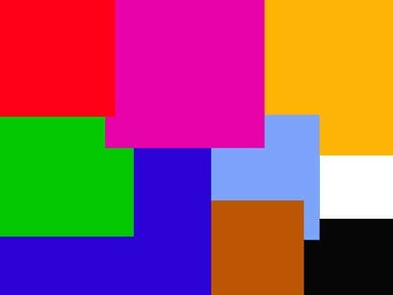

Значення кольорів у психології: особливості сприйняття різних відтінків

Колір це те, що оточує нас і те, що допомагає формувати емоції. Світ навколо нас сповнений фарб. Чи думаємо
ми про
те, як вони впливають на наш стан чи настрій? Яка колірна гама сприяє плідній роботі, а яка, навпаки,
пригнічує та знижує наш потенціал? Розібратися з впливом усієї палітри на нашу підсвідомість допоможе
психологія. З її допомогою можна вивчити вплив навколишнього світу на наше життя та здоров’я та, за
необхідності, змінити відтінки нашого життя на більш позитивні.
Значення кольорів у психології
Психологія розглядає вплив кожного із квітів на наш мозок. У повсякденному
житті ми надто завантажені роботою
та проблемами і не надаємо значення тому, чому в деяких приміщеннях нам працюється важче, а в інших
легше,
чому деякі предмети викликають у нас неконтрольовану агресію, а деякі завдяки своїм фарбам несуть спокій
та
умиротворення. Ще з давніх-давен вчені приділяли велику увагу саме кольору, тому що все навколо нас має
якесь забарвлення і, відповідно, несе певний посил, який ми не в змозі розшифрувати.
Помаранчевий колір
Колір життєрадісності та енергійності. Так само як і жовтий, він
стимулює процес спілкування, сприяє
емоційній відкритості людей. Але помаранчевий — більш теплий і чуттєвий колір,
він має більшу насиченість і
концентрацію.
Помаранчевий колір має друга чакра — Свадхістан, яка відповідає за чуттєве задоволення, прояв жіночності
та
сексуальності. І це стосується і самого кольору — він сприяє розкриттю чуттєвості і можливості
отримувати
задоволення від життя. Він також допомагає у стані пригніченості та депресії, підвищує настрій та
життєвий
тонус.
Сприятливо використовувати помаранчевий колір в інтер’єрі приміщень, де відбувається активне спілкування
та
творчі процеси. Помаранчевий також підвищує апетит та прискорює обмінні процеси. В одязі помаранчевому
кольору віддають перевагу яскраві та творчі люди, відкриті для спілкування та життя.
Синій колір
Більшість людей на запитання про улюблений колір відразу ж дадуть відповідь, що це синій. Чому так відбувається? Синій дуже глибокий і як би затягує у свою безодню. Для кожного індивідуума ця безодня своя: проблем, думок, міркувань, і чим темніший відтінок, тим більше передумов до міркування та спроб знайти істину. Однак, синя палітра є заспокійливою для нашої нервової системи, допомагає на якийсь час забути про свої проблеми і розчинитися в навколишній дійсності. Відбиває гармонію з одного боку і завзятість, серйозність та суворість з іншого. Синій сприймається нами як щось до кінця неусвідомлене, але яке інтригує своєю глибиною і загадковістю. Може бути недарма у багатьох фільмах і мультфільмах магів зображують убрані в синю мантію.Зелений колір
З погляду психології він символізує природність та життєву енергію. Втомившись від шумної міської метушні, ми прагнемо побути в місці з найбільшою кількістю зеленого: на лузі, в лісі, в парку, щоб відновити втрачені сили та розслабитися. Позначає стабільність і непохитність, таку як у нашої матінки природи. Часто використовується в рекламах, тому що ми підсвідомо сприймаємо цей колір як щось природне, природне. Зелений має заспокійливу дію і може негативно впливати на психіку деяких людей тим, що під його впливом вони втрачають прагнення своєї мети і стають апатичними. Саме тому зелені відтінки не варто використовувати на робочому місці.Жовтий
— це колір, який застосовується для безлічі ідей залежно від свого відтінку та області застосування. Він може символізувати щастя, сонячне світло, енергію та радість. Тим не менш, жовтий колір може вказувати і на щось негативне, наприклад, на боягузтво, зрадництво, терор та хвороби. Цікаво, що остання з цих асоціацій, як вважають, обумовлена тим фактом, що жовті пігменти часто присутні у токсичних матеріалах. Крім того, оскільки жовтий є одним із найбільш видимих кольорів всього спектру, він часто використовується у вивісках, плакатах, знаках. Якщо потрібно швидко привернути увагу, використовуйте трохи жовтого. Так працює психологія кольору.